二、Listen and Mark O or X 仔細聽，兩個空格中的字母發音相同畫 O，不同畫 X。（每題 2 分，共 10 分）
每題念兩次，題與題之間停 5 秒；也可按各題 ▶ 單獨播放
1.
__at ; __ug
答案：O bat、bug 都是 b 🎧 （女）bat. bug.
2.
__en ; __ip
答案：X ten 是 t，dip 是 d 🎧 （女）ten. dip.
3.
__ot ; __ad
答案：O dot、dad 都是 d 🎧 （女）dot. dad.
4.
__ig ; __ub
答案：X big 是 b，tub 是 t 🎧 （女）big. tub.
5.
__ip ; __ot
答案：X tip 是 t，pot 是 p 🎧 （女）tip. pot.
三、Listen and Number 仔細聽，把圖片依照聽到的順序編號 1～6。（每題 2 分，共 12 分）
每題念兩次，題與題之間停 5 秒；也可按各題 ▶ 單獨播放
123456
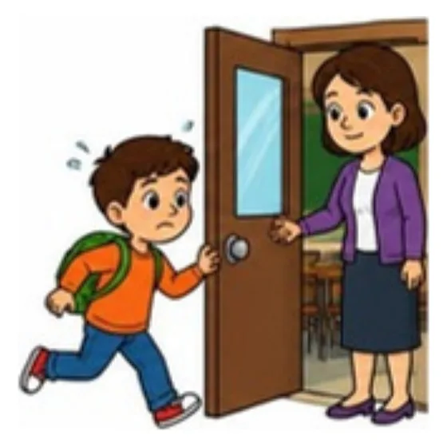
(a)
答案：2🎧 Sorry, I'm late.
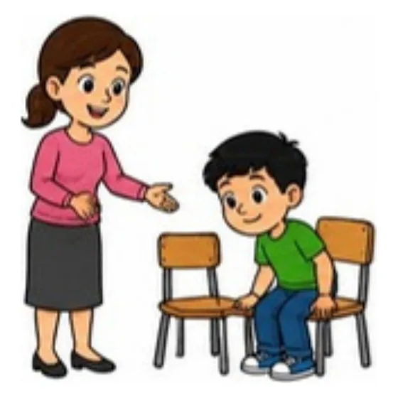
(b)
答案：4🎧 Have a seat, please.
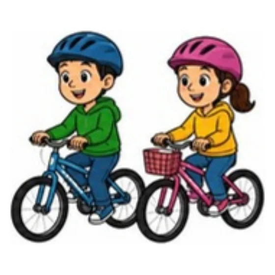
(c)
答案：6🎧 Let's go.
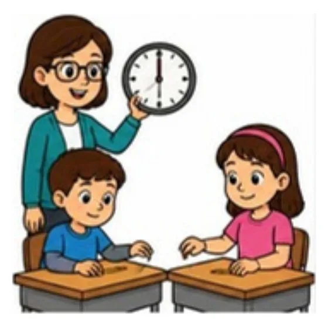
(d)
答案：1🎧 Time's up.
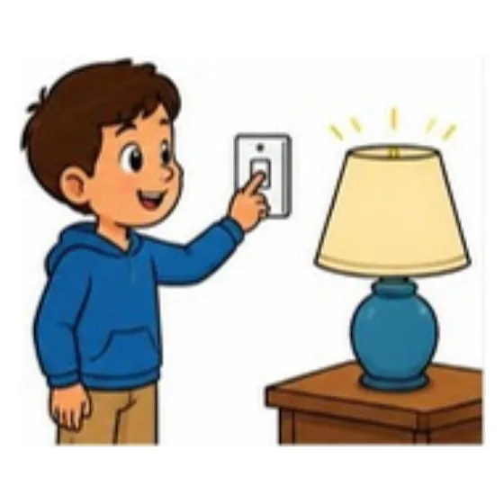
(e)
答案：5🎧 Turn on the light.
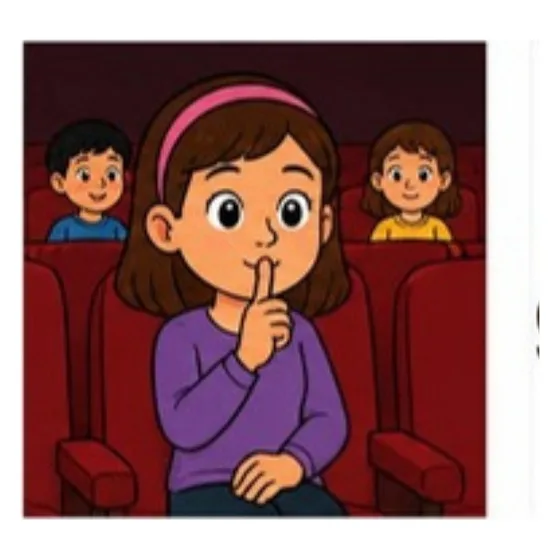
(f)
答案：3🎧 Don't talk.
四、Listen and Choose 仔細聽，選出符合內容的圖片。（每題 2 分，共 10 分）
每題念兩次，題與題之間停 5 秒；也可按各題 ▶ 單獨播放
1.
答案：(A) 廚師🎧 （童）Is he a farmer? （男）No, he isn't. He's a cook.
2.
答案：(B) 護理師🎧 （童）This is my mother. She's a nurse.
3.
答案：(A) 學生🎧 （女）Who's he? （童）He's my brother. He's a student.
4.
答案：(C) 醫生🎧 （男）Is she a nurse? （女）No, she isn't. She's a doctor.
5.
答案：(B) 農夫🎧 （童）My grandpa is a farmer. He's strong.
五、Listen and Respond 仔細聽問句，選出最適當的回應。（每題 2 分，共 10 分）
每題念兩次，題與題之間停 5 秒；也可按各題 ▶ 單獨播放
1.
答案：(2)🎧 （男）Who's she?
2.
答案：(1)🎧 （女）Is he a teacher?
3.
答案：(2)🎧 （童）Sorry, I'm late.
4.
答案：(1)🎧 （童）This is my grandma.
5.
答案：(3)🎧 （女）Is your father a farmer?
Part 2 Reading & Writing 讀寫測驗（50%）
六、Read and Write 讀一讀，寫出正確的數字。（每題 1 分，共 6 分）
1.
twelve →
答案：12
2.
fifteen →
答案：15
3.
eighteen →
答案：18
4.
eleven →
答案：11
5.
twenty →
答案：20
6.
fourteen →
答案：14
七、Look and Write 看圖，從框中選出正確的單字寫在線上。（每題 2 分，共 12 分）
cookteachernursedoctorfarmerstudent
1. He is a .
答案：teacher（老師）
2. She is a .
答案：nurse（護理師）
3. My grandpa is a .
答案：farmer（農夫）
4. My mom is a .
答案：doctor（醫生）
5. My brother is a .
答案：student（學生）
6. My dad is a .
答案：cook（廚師）
八、Read and Choose 讀一讀，選出正確的答案。（每題 2 分，共 12 分）
1.
A: Who's ____? B: ____ is my mother.
答案：(B) mother 是女生，問與答都用 she
2.
A: Is she a cook? B: Yes, ____.
答案：(C) 肯定回答 Yes, she is.
3.
A: Is your grandpa a doctor? B: ____. He's a teacher.
答案：(B) 後面說他是老師，所以是否定 No, he isn't.
4.
A: ____ B: He's my brother, Ben.
答案：(C) 回答「他是我哥哥」→ 問 Who's he?
5.
A: Have a seat, please. B: ____
答案：(A) 別人請你坐，要說謝謝
6.
A: ____ she a nurse? B: No, she isn't.
答案：(A) she 搭配 is → Is she a nurse?
九、Read and Mark O or X 讀短文，敘述正確畫 O，錯誤畫 X。（每題 2 分，共 10 分）
Hi, I'm Lily. This is my family. My grandpa is a farmer. He's strong. My grandma is a cook. My father is a doctor, and my mother is a teacher. Tom is my brother. He's twelve. He's a student. I'm a student, too. I love my family.
1.
Lily's grandpa is a farmer.
答案：O
2.
Lily's grandma is a teacher.
答案：X grandma 是 cook，mother 才是 teacher
3.
Lily's father is a doctor.
答案：O
4.
Tom is eleven years old.
答案：X Tom is twelve. 是 12 歲
5.
Tom is Lily's brother.
答案：O
十、Look and Write 看家族樹，把正確的家人單字寫在空格裡。（每題 2 分，共 10 分）
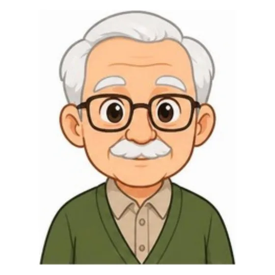
Leo
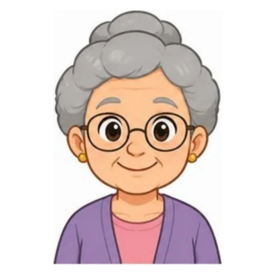
Mary
Ray
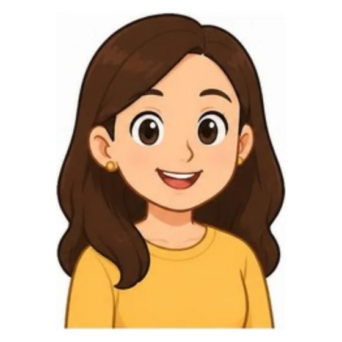
Tina
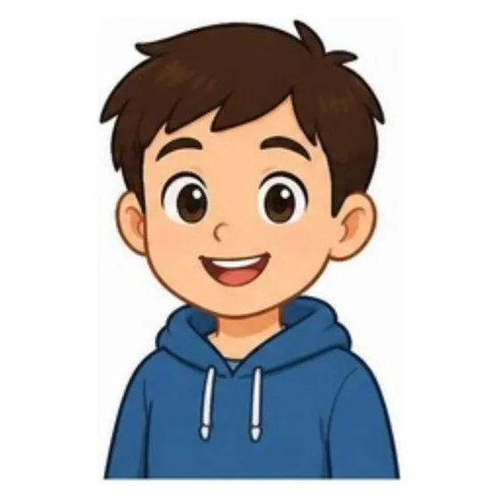
Andy
me
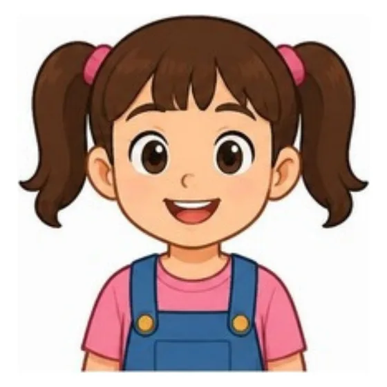
Dora
Hi! I'm Dora. This is my family. My 1. is Andy. He is a student. Tina is my 2.. She's a nurse. Ray is my 3.. He's tall. Leo is my 4., and Mary is my 5.. I love my family!
答案：1. brother 2. mother / mom 3. father / dad 4. grandfather / grandpa 5. grandmother / grandma